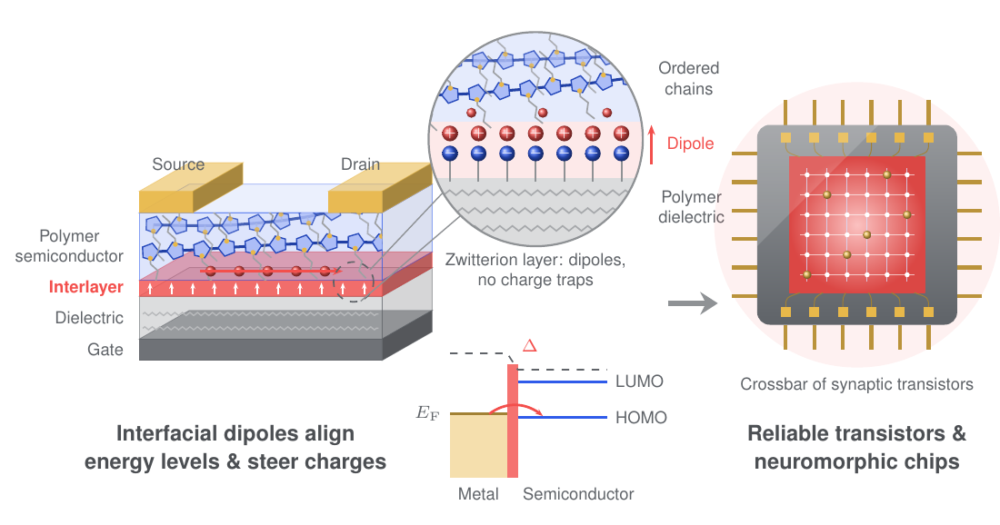
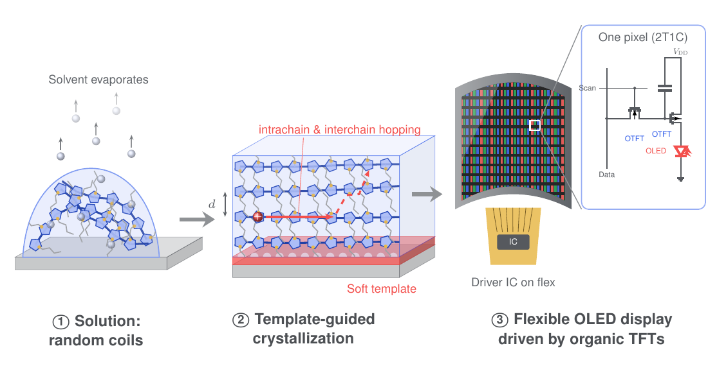
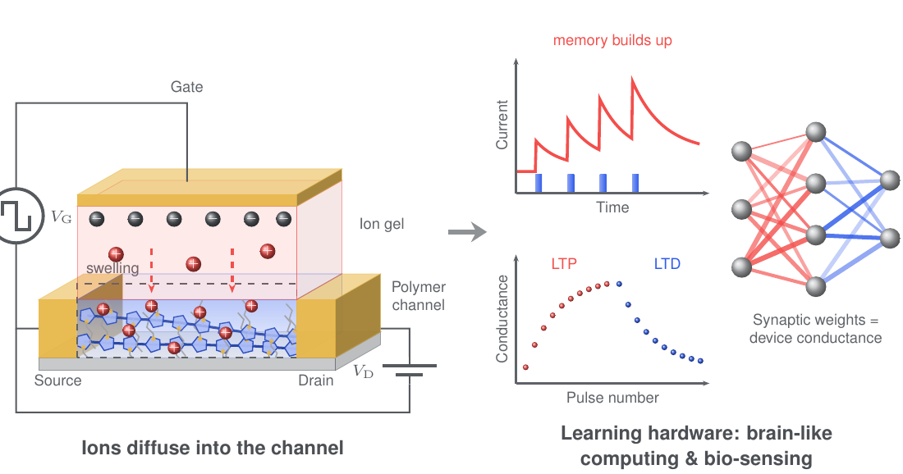
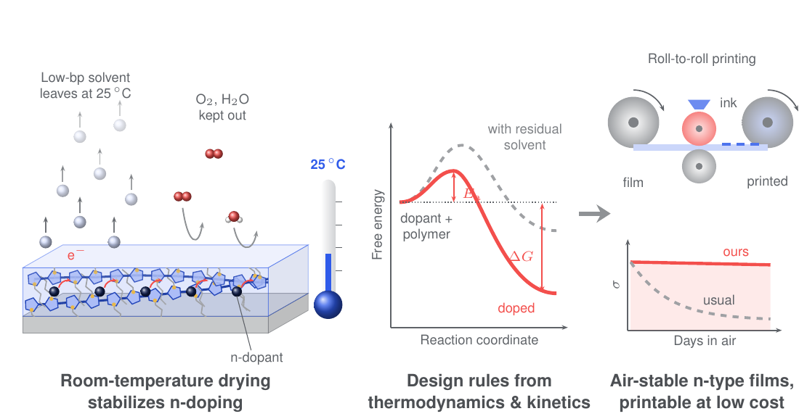

We turn soft-matter science — interfaces, molecular packing, ion transport and doping chemistry — into design rules for organic electronics that industry can build.
The PI spent 2.5 years as a staff engineer at Samsung Electro-Mechanics developing MLCC materials, and knows what a process line needs.

Interlayers that align energy levels and remove charge traps make organic transistors stable and reproducible — the basis for neuromorphic chips.
Woo et al., ACS Appl. Mater. Interfaces 18, 19380 (2026). DOI

Soft templates and solvents turn random polymer coils into ordered films with fast charge transport for printed, flexible displays and circuits.
Song et al., J. Mater. Chem. C 13, 17801 (2025). DOI

Controlling where and how fast ions enter a polymer channel gives devices memory and learning — hardware for brain-like computing and bio-sensing.
Lee et al., Small 22, e73608 (2026). DOI

Thermodynamics and kinetics turn trial and error into process rules — e.g. air-stable n-type doping by room-temperature drying, ready for low-cost printing.
Lee et al., ACS Appl. Mater. Interfaces 16, 51221 (2024). DOI
| No. | Title | Year |
|---|---|---|
| KR 10-1656878 | Metal complex and graphene–metal complex composite for n-type doping of graphene without loss of transparency | 2016 |
| KR 10-1933102 | Organic thin-film transistor array using a solution-processable ambipolar polymer semiconductor, and its fabrication | 2018 |
Registered patents only. Newer filings are listed once published.
| Equipment | What we measure / make |
|---|---|
| Probe station + semiconductor parameter analyzer | Transistor transfer/output curves, synaptic pulse responses |
| Thermal evaporator | Metal electrodes and small-molecule films |
| Low-frequency noise spectrometer | Trap density and interface quality of devices |
| Spectroelectrochemistry | Doping and ion uptake in polymer films |
| Universal testing machine | Mechanical durability of flexible devices |
Plus access to the PKNU core facility. Ask us about external measurements.
Interested in a collaboration or a measurement?
Contact us